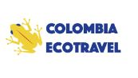

Agences de tourisme pour faire de la randonnée
Il y a de nombreuses agences de voyage en Colombie qui proposent des randonnées guidées. Voici quelques-unes des agences les plus populaires :

Spécialisée dans les voyages responsables, cette agence propose des randonnées dans les régions les plus reculées et préservées de Colombie. Localisation: Manizales, Caldas.